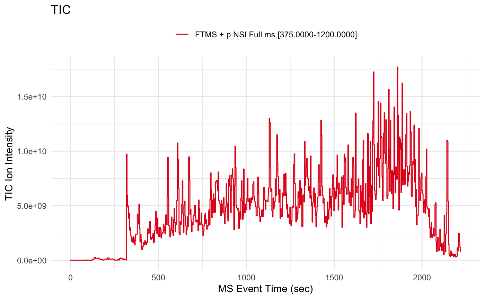
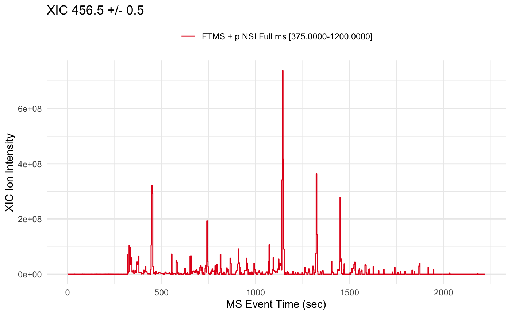
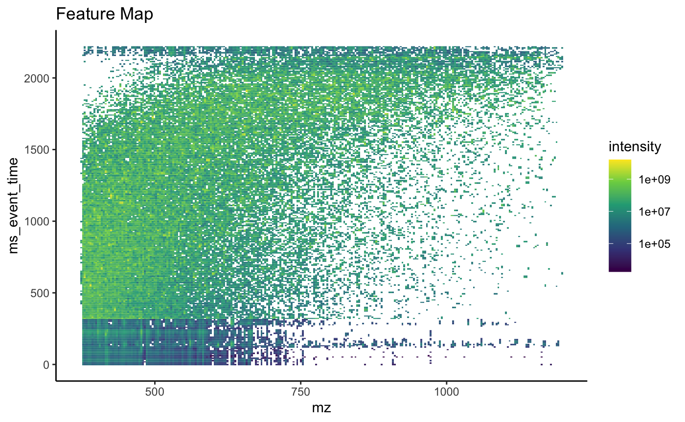

A simplified mass-spec data reader that creates a standardized data object for use among the tidyproteomics packages.
Installation
To install, open R and type:
install.packages("devtools")
devtools::install_github("jeffsocal/msreadr")… also install other GitHub dependencies
devtools::install_github("jeffsocal/mspredictr")… also install other Bioconductor dependencies
install.packages("BiocManager")
BiocManager::install("mzR")Get Started
Its simple to get started, just point the read_spectra() function at a downloaded MGF or mzML file and save as an object.
library(msreadr)
mzml <- path_to_example() |> read_spectra()Examine the contents
mzml##
## ── MS SPECTRA data object ──
##
## Memory 87.99 MB
## MS1 Scans 900
## LC time 0.12 - 2218.76 (sec)
## ~ FTMS + p NSI Full ms [375.0000-1200.0000]
## MS2 Scans 15024
## LC time 0.65 - 2220.23 (sec)
## precursors 374.67 - 1196.97 (mz)
## Plot a TIC
mzml |> plot()
Plot an XIC
mzml |> plot(mz = 456.5, mz_tolerance = .5)
Plot an MS1 heatmap
mzml |> plot(type = '3D', bins = 256)
Extending msreader
Check out the related packages mspredictr